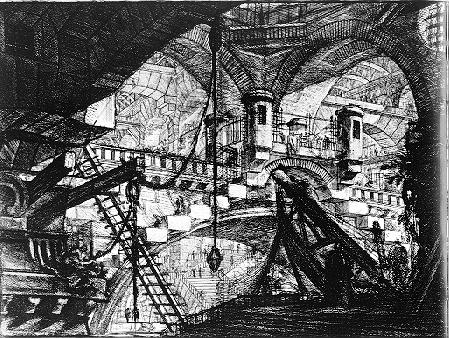

Catharsis
by
Nigel Brown
At first I thought the makeshift construction was a phantasm, a trick of my eye seeking structure amongst the tumble of girders, the warped barrel of a Current Cannon, shards of crystalline walkways, shattered chamber walls — the detritus of a wrecked City. I trudged down the slope of the final ramp; the twilight image solidified into my destination.
“Grandfather!” I called out.
The words died in the silent air.
I scanned his refuge as I approached. The twisted conduits and ducts, with their channels forced open to yield what provisions they would, proved that I was in the right place.
But there was no sign of the old man amongst the algae pans — now dried out and caked in brown scum — or a hint of his presence around the huge water pipe that rose out of this Level’s floor in a great arc.
As I drew closer, the floor plates grew slippery under my feet. There must have been a leak from the pipe. My engineer’s mind wondered how that would affect the reconstruction work. I shoved those thoughts aside: I wasn’t here to survey the City. That work was done.
After a hundred thousand years, it was time to clear out these Levels of the Long Siege — the lowest half-mile of the Pyramid that had borne the greatest brunt of attacks from the Night Land.
I quickened my pace, but my heart began to thump for another reason: What if he wasn’t here? What if I was too late?
The small shelter, a crude lean-to framed by broken spears and walled with ripped cloaks, stood under the curve of the pipe. It lay concealed within its deeper shadows.
The irony struck me hard. It was hidden as if he — of all those amongst the Peoples of the Redoubt — was the frightened one. But my grandfather knew no fear, in contrast to those many millions; yet none of them would call him brave.
“Grandfather?” I repeated. I didn’t want to alarm him, especially after his last encounters with the Clearing Teams.
The shelter was still. Just being this close to it brought back my earliest memories of the time when I lived in a hovel like this. I was eight years old again, and walking alongside our family cart as my father and older brothers hauled it through the City’s ruined heart; we would scavenge useful items to trade with the Other Peoples for a taste of their delicacies, or to replace the precious baubles our own Tribe had lost.
Maybe this was the remnant of our own family shelter.
I shook my head free of its memories ... this was no time for nostalgia.
I gingerly approached the entrance flap. My stomach flipped as I lifted it and looked inside. A bundle of rags lay on the flaxen mat. It resolved itself into human shape. The diskos lay alongside it, discarded and dark.
I hurried forward, lifted his head, and turned it towards me — it was my grandfather.
His eyes opened. They focused on me. Locked onto my features.
“Gathar,” he said.
He recognised me.
“You have your father’s face,” he said. “Those eyes I remember well, when he last pleaded for me to leave our Homeland.”
I sighed. He was never one to mince words. The old resentments still ran deep.
“So you’re not going to chase me away?” I said. “Frighten me off with your diskos?”
My grandfather’s ancient features cracked in a wide smile. He still had all his teeth. They gleamed.
“I sent those maggot turds away so you would come.”
He pulled away from me, stretched and stood up. As a small boy, I remembered him towering over me. He still did. Despite my adulthood, his spare frame reached to the top of the shelter; he was a good head taller than I was.
I noticed that he still wore the battered breastplate of our family’s House — that traditional armour borne as a constant reminder to himself of our Tribal lore ... and of our supposed folly.
“I thought ...” I began.
He caught the meaning of my words, and smiled again. Then his mirth exploded in a deep belly roar. His foul breath washed over me, but I didn’t mind. He was alive, and well.
“This place is our Homeland. It cannot cause me harm. We have lived here for countless generations. So it has been…” Then his voice stumbled. His eyes flashed with sudden anger. “So it should be.”
I merely gazed at him. My silent disapproval spurred him into action. He slung his robe and hood over his armour to cloak it in white — the colour of peace — and strode out of the lean-to. I followed him outside, beyond the shadow of the pipe. The uneven floor left me stumbling after him; my grandfather seemed sure-footed as his sandals crunched over the wreckage of a million lives.
“Come,” he said. “This is what I mean.”
He led me past the dried out algae pans, then stopped when we reached the edge of the one furthest from the pipe. I looked down into the basin. A metal sheet lay in one corner. My grandfather bent down, grabbed it by its edge, and flung it away with a clatter. Some water still persisted beneath it.
“Look,” he said. Kneeling, he scooped some of the green scum off the surface. He took a deep swallow of the stringy film.
“Breakfast.”
I saw now how he had survived, even when the Clearing Teams had reported that there was nothing to eat in this urban desolation.
“This is no life,” I said.
“This is the life of our people,” he retorted. “Why should it be different now? We fought amongst ourselves before we saw the truth — then we discovered a life beyond the Battle: the way of Peace.”
“The Frightened Peoples” — How I slipped so easily back into the old ways of speaking! — though I no longer believed it — “The Others have now decreed that these Lower Levels must be sealed off. They are ready to do a better job of salvage than we ever could, and strengthen these parts against assault. Times change.”
“No,” he muttered. “You’ve changed. Our tribe chose to live this life free of the rest of the peoples. So it has been for thousands of years! Now you’ve all joined them; you are caught up in their world. You deny alternatives; you deny the possibility of inner peace.”
I shook my head. When the Pyramid’s Council of Cities had come to us, explaining that they were sealing the bottom half-mile of the Great Redoubt for greater security, my tribe had at first denied that it was anything to do with them. But common sense prevailed. We accepted their offers of relocation — dissipation of our people amongst the Upper Cities of the Redoubt.
So we were the dispossessed of that half-mile: refugees of terrible battles and horrors who now deserved more than a miserable existence amongst the ruins of our greatest battles, our glorious victories…
It had taken all this time — centuries — for the Redoubt to recover from the last battles that shattered our Levels. Now the Others were ready to pay us restitution with their hospitality.
“Crap,” my grandfather said. “It’s crap. They’ve brainwashed you to accept their version of the world.”
I sighed. “It’s for the greater good. Only you hold out, but the reconstruction machines will arrive soon. Father asked me to see you before that happened.”
Grandfather’s face darkened. “That man’s no longer my son.”
“Yet you don’t deny me,” I replied.
“I will, if you insist on accepting this erroneous position.”
I turned, and began to walk away. The Clearing Teams would be along before the next sleep-time. I wasn’t prepared to witness his burial as the City was re-sculpted for the good of the Pyramid’s many millions.
“Where are you going?”
I refused to answer. If he wouldn’t agree that this was the right thing to do — that our own people’s traditions were no defence against the horrors of the Land outside — then we would never have any common ground.
“Don’t you see?” he shouted. “There’s nothing out there. Nothing to fear! It was just us, fighting amongst ourselves! It’s their own horrors that they see when they look out. Their own terror that keeps them pinned inside this Pyramid of Pygmies!”
His words percolated through my mind as I marched, triggering an idea.
I stopped, and turned back towards his refuge.
"Are you ready for this?" I asked.
My grandfather stood tall and proud in the inner porch of the Great Gate.
He stiffened at my words.
“I have submitted to the Preparation, although I refuse to accept its purpose.”
The lesser gate cranked upwards as he spoke. Though I had spent many years in the Upper Levels, I still could not bear to gaze out onto the Night Land. I would hurry past any embrasures with my eyes averted.
I kept my gaze on his face. I could not look beyond the door into where he would soon stride.
His early teachings — though I believed them wrong in my head — could not be so easily scored from my heart.
“Farewell, Grandfather,” I said.
His features softened, and he placed his hand on my crown.
“I cannot blame you for the sins of your fellows, Gathar,” he said. “You have merely been weak. It is up to me to prove you wrong. Thank you for giving me this opportunity to do so.”
He turned, with an eager look in his doomed eyes, and passed through the Gate.
© 2002 by Nigel Brown. Image by Giovanni Battista Piranesi.